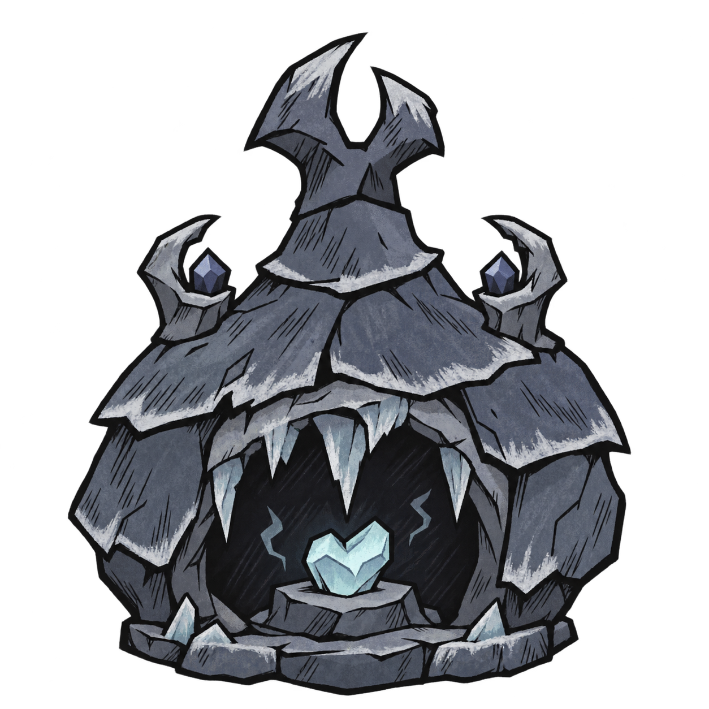
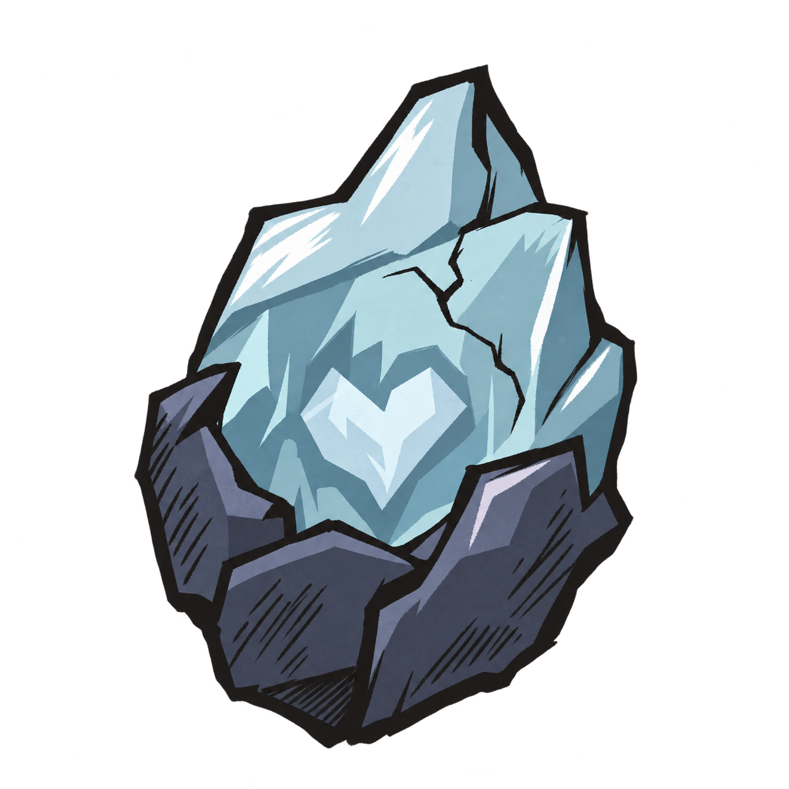
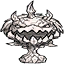

独立绘制的透明底静态预览。当前模组资源保持原样；以下尺寸仅用于比较可读性，并非实机截图。

参考龙鳞火炉的饱满轮廓、尖顶与正面开口比例，加入厚石鳞、冰棱和霜鲨鳍形装饰。

深色裂壳包住浅蓝冰晶，内部露出心核。粗轮廓与大切面用于维持物品栏中的辨识度。
统一 160 × 160 展示框；原图留白不同，不代表实际游戏占地。

统一 64 × 64 展示框。新图保留生成时的透明边距，实装时还需裁切、校准锚点。